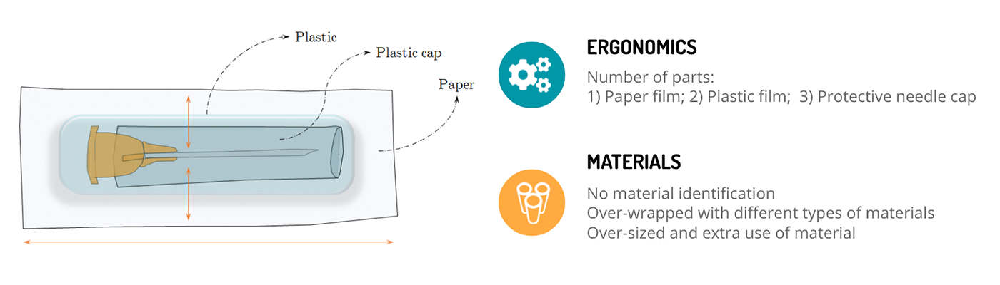
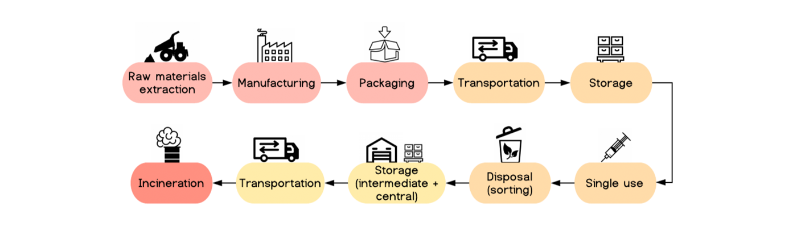
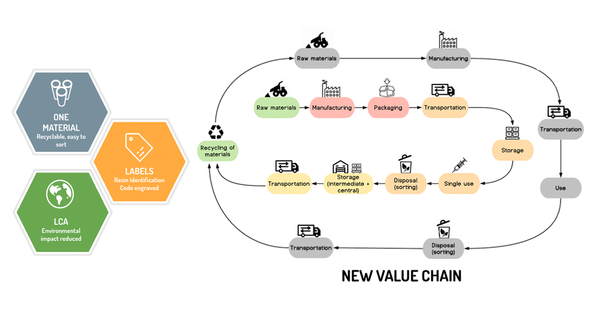
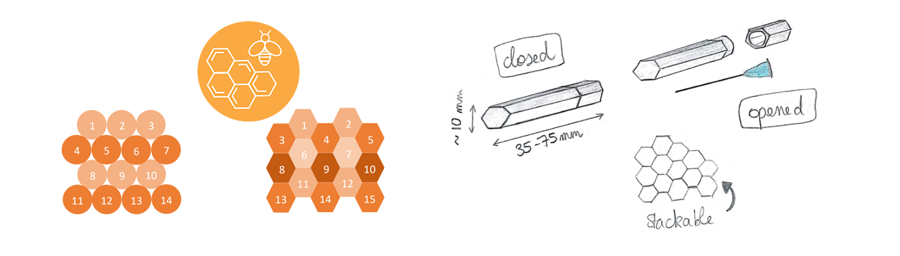
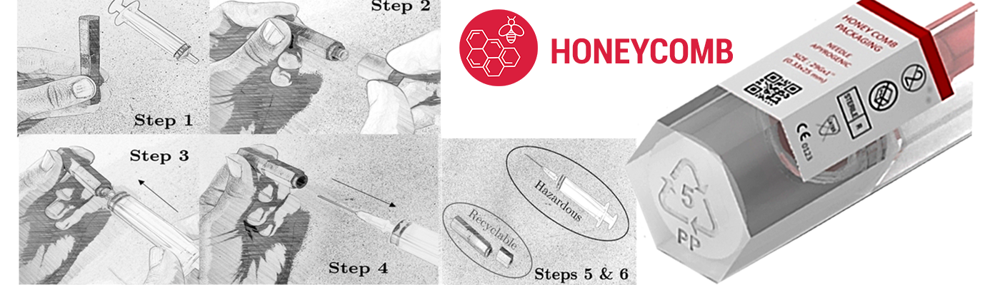

HONEYCOMB packaging has a circular economy approach, and a sustainable perspective to the urgency to solve environmental issues as reference for a new design model to generate clean and sterilized plastic packaging waste. The design for recycling solution ensures the circular transition for plastic packaging, encoraging the material separation process and the re-use of packaging waste as raw material once again in the medical sector.
Problem
How design for recyling in a circular economy context could change the actual waste scenario generated by needles packaging once the standard medical care regulations are against the reusability of medical tools?
More than 90% of all the tools that are used in hospitals and clinics are single-use. And as you dispose the tool after one utilization only, that is also the case for the packaging. That is why there is a huge amount of waste especially plastic, that is generated each day in hospitals. Moreover, some of these products, needles for example, have an expiry date, meaning that hospitals need to throw them after the date even if they are not used.
Investigation
In terms of design, the current packaging solutions on the marketing are not designed for recycling at all. They have several parts, generally complex, and sometimes some extra layers that we call over wrapping. In that sense, currently the life cycle of needles and their packaging is basically linear because everything goes to incineration after disposal. And this is a problem because actually, around 85% of all the plastic waste in hospitals is considered as non-hazardous. That is to say it is clean, it hasn’t been contaminated by anything so it could be reused without any problem. creating a new value chain.

Goal
The new packaging design solution for needles is limited to cover and investigate at best the reduction of raw materials used for a product categorized by the medical industry as a single use product (the disposible medical syringe), substituting worst-performing products on the market by using a new design and a sustainable material choice with least life-cycle damage, aiming a new value chain to the sector.
Inspiration
In the design level, nature has been a rich source of inspiration because it is full of models potentially applicable for innovation. This project, was inspired on the phenomena found on living organisms, which can be mimicked on solutions to solve the problems found during investigation phase. The final solution proposed has a hexagonal shape found in bee hives to provide effective space occupation, to maintain needels sharpeness and to avoid contamination.
Concept Solution
HoneyComb new packaging solution is made of a single material, which is recycled, sterilized and easy to sort, and even for a compact design, it has space for labelling. The design also improves LCA eco-indicator value, which scores half of what a standard needle packaging would score by the choice of material, shape and manufacturing process.
The new circular model concept can use recyclability in the end of its cycle instead of being sent for incineration. The new design can also increase the reuse of plastic waste by manufacturers to produce new products, creating a new value chain and new business models for hospitals and clinics.

- Research
- Interview & Observation
- Brainstorming & Bio-inspiring
- Pugh Matrix
- Scoring Matrix
- 4 Box Analysis
- LCA Analysis
- Prototype
- Co-Creation
- Branding
- UI Design
- Material Research
- Manufacturing Analysis
- Test
- Product Development
- 2D Drawing
- 3D Rendering
Design Process
- Illustrator
- Photoshop
- InDesign
- SolidWorks
- CES Granta Design